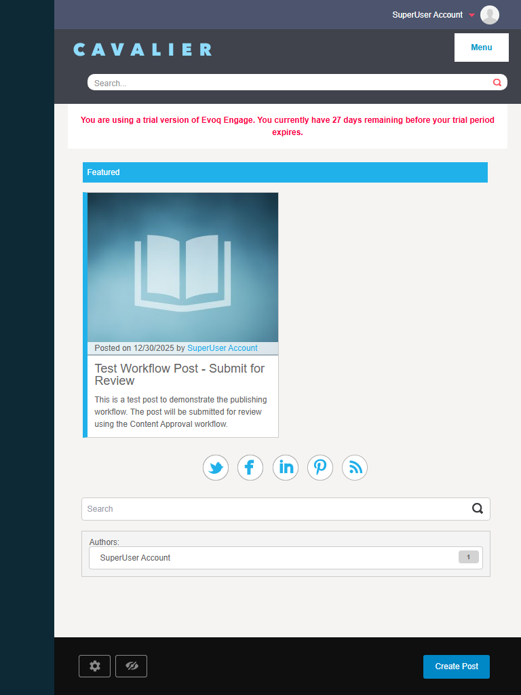
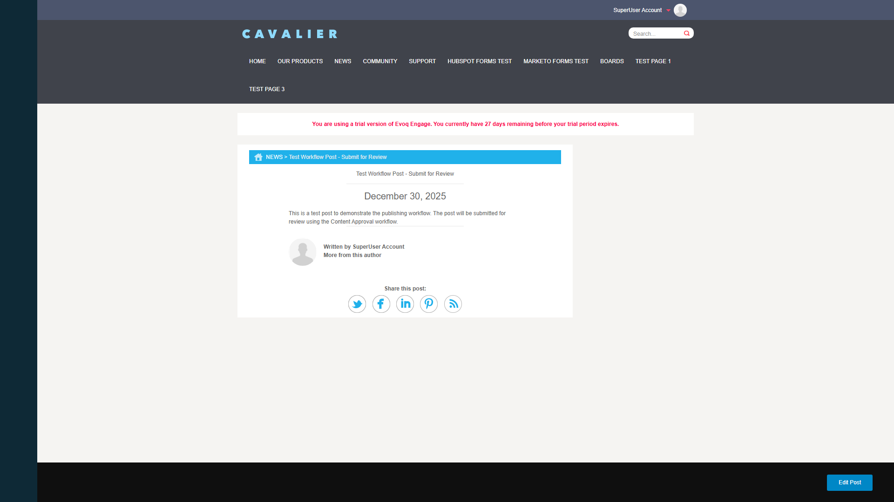

Checked the "Featured" checkbox in Edit Post Details panel
Saved the changes
Verified the Featured Posts Display appeared with the "Featured" header
Result: The Featured Posts Display module correctly shows posts marked as "Featured" in a card layout with the blue "Featured" header bar.
Screenshot - Edit Post Details with Featured Checkbox:
Screenshot - Featured Checkbox Checked:
Screenshot - Featured Posts Display:
2. Responsive Layout (Mobile/Tablet/Desktop)
Status:PASS
Steps Taken:
Tested at desktop resolution (1920x1080)
Tested at tablet resolution (768x1024)
Tested at mobile resolution (375x667, below 640px breakpoint)
Result: The layout responds correctly at all viewport sizes:
Desktop: Cards display at ~50% width in a grid layout
Tablet: Single column layout with full-width cards
Mobile (below 640px): Mobile-specific card style with title overlaid on background image
Screenshot - Desktop View (1920x1080):
Screenshot - Tablet View (768x1024):

Screenshot - Mobile View (375x667):
3. Post Card Information Verification
Status:PASS
Steps Taken:
Examined the featured post card content
Verified all expected information is displayed
Result: The post card correctly displays:
Background image (default placeholder when no custom image set)
Meta information: "Posted on [date] by [author]"
Post title as clickable link
Post summary/description text
Author name highlighted in accent color
Screenshot - Post Card Information:
4. Card Hover Effects
Status:PASS
Steps Taken:
Hovered over the featured post card
Verified cursor changes to pointer
Observed visual feedback
Result: The card shows cursor: pointer on hover, indicating it's clickable. The entire card is a clickable area that navigates to the post detail.
Screenshot - Card Hover State:
5. Navigate to Post Detail from Card
Status:PASS
Steps Taken:
Clicked on the featured post card
Verified navigation to post detail page
Confirmed post detail page displays correctly
Result: Clicking the card successfully navigated to the post detail page at /News/Test-Workflow-Post-Submit-for-Review. The detail page shows:
Breadcrumb navigation
Post title
Publication date
Post content
Author information with avatar
Social sharing buttons
Screenshot - Post Detail Page:

6. Background Image Display
Status:PASS
Steps Taken:
Observed the background image on the featured post card
Verified default placeholder image is displayed when no custom image is set
Result: The card displays a default background image (book/document icon) when no custom post image is set. The CSS references img-default-post-image-lg.jpg as the fallback image.
Observation: The default image is displayed correctly. Custom post images can be added through the Upload File option in the post editor.
7. Comment Count Display
Status:N/A
Steps Taken:
Reviewed the code for comment count functionality
Checked for Disqus integration
Result: Comment count display requires Disqus to be configured. The code shows:
Comments are displayed when ShowNumberOfComments && post.AllowedComments is true
Observation: This test was not applicable as Disqus is not configured in the test environment. The feature code is present and would display comment counts if Disqus were set up.
Code Analysis Summary
Featured.ascx (View)
Renders featured posts with two card types: desktop-card and mobile-card
Desktop cards show background image, meta info, title, and summary
Mobile cards are optimized for smaller screens with overlaid title
Clicking anywhere on the card navigates to post detail
Comment count integration with Disqus
CardViewManager.js (JavaScript)
Handles touch events for mobile interaction
Manages background image URLs
Implements pagination (load more)
Supports filtering by tags, author, and text search
Uses Knockout.js for data binding
featured.css (Styles)
Responsive breakpoint at 640px
Desktop cards: ~50% width, 360px height
Mobile cards hidden on desktop (display: none)
Default background image fallback
Accent color border on left side of cards
Overall Assessment
Overall Status:PASS
The Featured Posts Display feature is functioning correctly. All core functionality was tested and verified:
Posts can be marked as "Featured" through the Edit Post Details panel
Featured posts display in a responsive card layout
Cards show all expected information (image, date, author, title, summary)
Navigation to post detail works correctly when clicking cards
Responsive design works across desktop, tablet, and mobile viewports